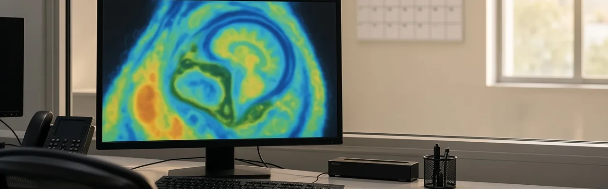

Et team med MITs Judah Cohen bygde et maskinlæringslag som retter opp feilene i eksisterende værmodeller for det vanskelige vinduet to til seks uker fram i tid. Nøyaktigheten der ble doblet, og for første gang slo modellen de langsiktige klimatologiske gjennomsnittene i samme periode. Den tok førsteplassen i ECMWFs prognosekonkurranse, og siden den legger seg på toppen av en eksisterende værmodell i stedet for å erstatte den, er dette en reell gevinst for bønder, energibransjen og alle som forbereder seg på ekstremvær.
Kilde: news.mit.edu →I en klinisk studie i virkelige omgivelser, publisert i The Lancet, chattet 98 pasienter ved Beth Israel Deaconess Medical Center med Googles forsknings-AI, AMIE, før et akutt besøk på en primærhelseklinikk. En lege fulgte hver samtale i realtid. Ingen samtale måtte avbrytes av sikkerhetshensyn, og AMIEs differensialdiagnoser samsvarte med legenes endelige diagnose ni av ti ganger. Klinikerne sa at AI-sammendragene hjalp dem å forberede besøket i 75 % av tilfellene.
Kilde: blog.google →I en studie publisert i Science jobbet Microsofts AI Diagnostic Orchestrator gjennom 304 komplekse publiserte sykehistorier, ved å koordinere flere AI-agenter som et virtuelt panel som foreslår diagnoser og bestiller tester runde for runde. Den løste 83 % av sakene korrekt, mot 36 % for allmennleger som fikk bruke oppslagsverk. Sammenligningen brukte historiske sykehistorier og ikke virkelige pasienter. Microsofts rapporterte neste skritt er en klinisk vurdering ved Beth Israel Deaconess Medical Center, der systemet skal prøves på å triagere pasienter i venterommet på et akuttmottak.
Kilde: techrepublic.com →